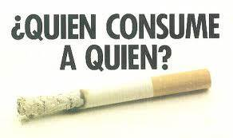
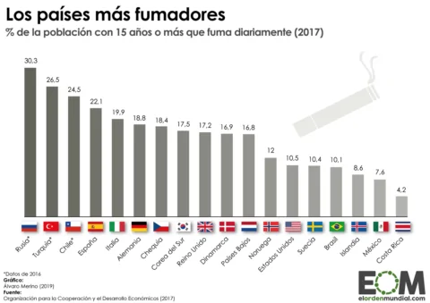
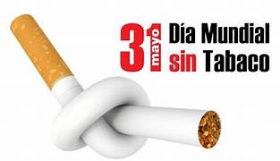

Introducción
El tabaco es una de las principales causas de muerte evitable en el mundo. A pesar de las advertencias, muchos jóvenes comienzan a fumar durante la etapa de bachillerato. Esta página busca informar y concientizar sobre los riesgos asociados con el consumo de tabaco.
Efectos del Tabaco
- Enfermedades respiratorias
- Cáncer de pulmón
- Problemas cardiovasculares
- Adicción y dependencia
Estadísticas
Según la Organización Mundial de la Salud (OMS), más de 8 millones de personas mueren cada año debido al tabaco. De estos, alrededor de 1.2 millones son no fumadores expuestos al humo de segunda mano.
Prevención
Es crucial que los jóvenes estén informados sobre los riesgos del tabaco y se promuevan estilos de vida saludables. La educación y la concientización son herramientas poderosas para prevenir el inicio del consumo de tabaco.
